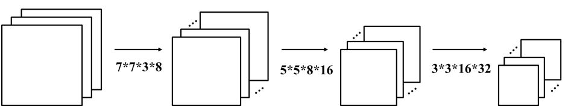

|
CNN中卷积计算单元电路设计
在本题目中，请你基于FPGA设计一种面积小、性能高、可适用多种卷积核大小的卷积计算单元电路。
在过去几年中，卷积神经网络在深度学习中取得了卓越的成绩。卷积神经网络中最核心的计算是特征图pixel和卷积核weight的卷积计算，如下公式所述：
 |
请设计一个可以计算多种大小卷积核的电路模块，运用该模块完成以下的三层卷积计算：给定一张64643的图片，依次和7738，55816，3316*32的卷积核进行卷积运算，得到正确的输出结果。
|  |
在本项竞赛中，请参赛选手遵循以下流程：
报名阶段
在官网上报名，按要求填写相关内容，包括成员信息、题目和选题摘要等。
初赛阶段
需提交RTL代码、仿真文件，以及技术文档。技术文档至少应包括如下内容：
说明卷积电路的基本功能，包括（但不限于）：
系统框图
通过和软件的结果对比，验证计算的准确性
延迟、资源消耗、吞吐率等性能指标
展示所设计电路面积延迟吞吐的优越性
决赛阶段
各参赛队需提交进一步完善的技术文档、RTL代码、仿真文件，并进行现场海报展示和PPT答辩。决赛阶段由专家组进行评审，依据作品在PYNQ-Z1的展示情况、现场报告和技术文档进行现场打分。